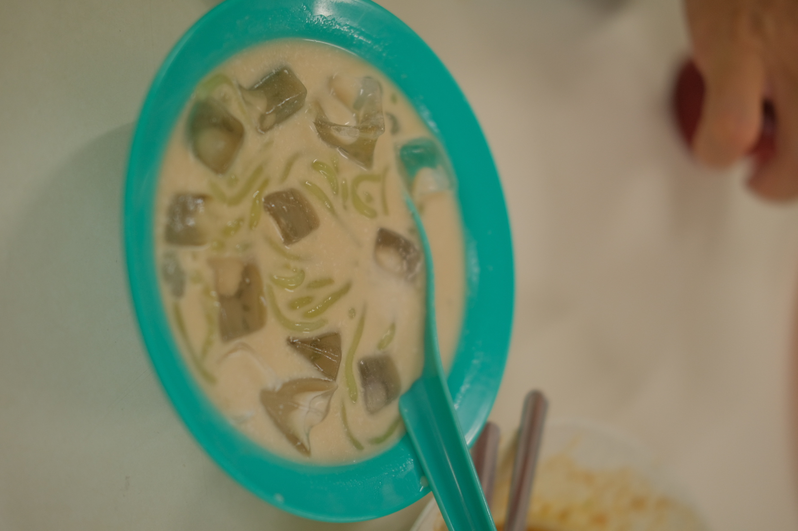
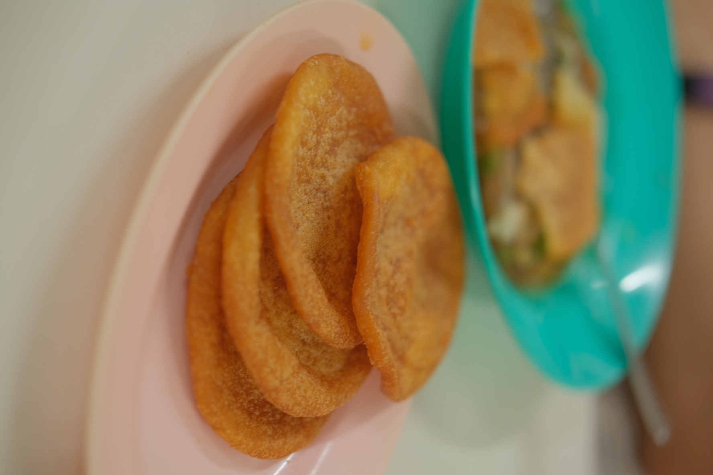
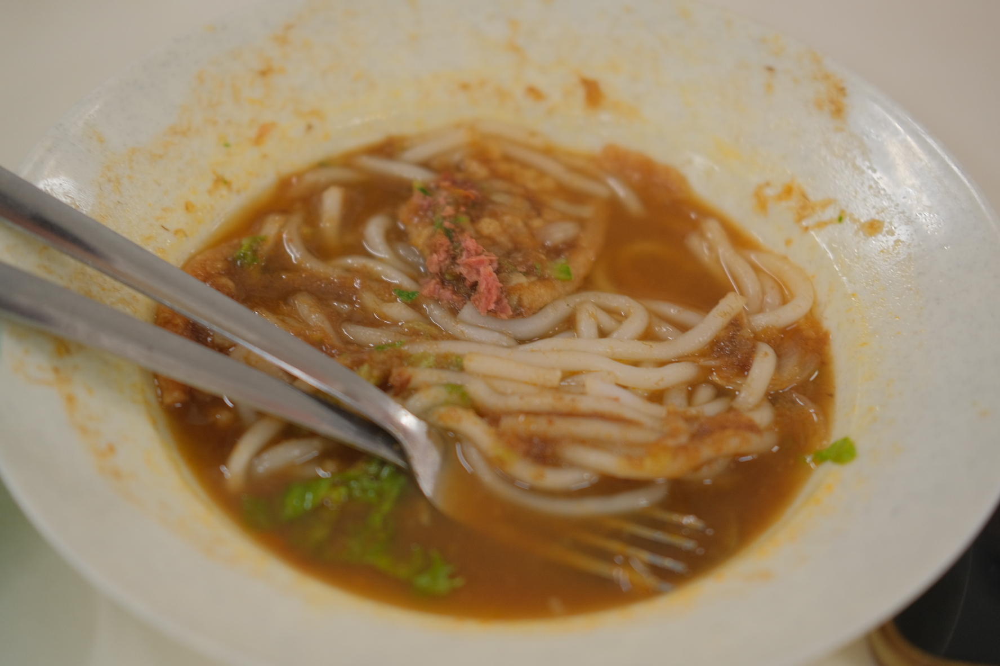
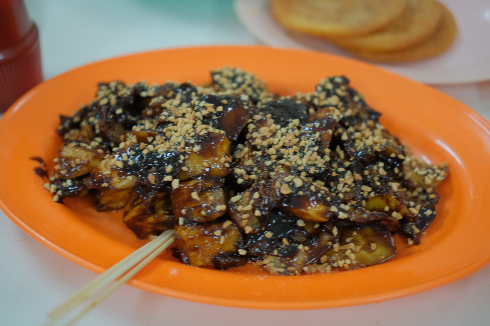

The first blog. Short introduction to do with Penang or food.

The second blog. Short introduction to do with Penang or food.

The third blog. Short introduction to do with Penang or food.

The fourth blog. Short introduction to do with Penang or food.